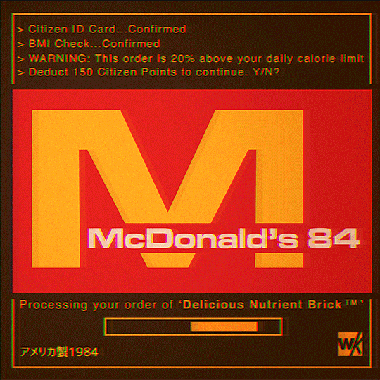

このポスターが描く1984年の未来では、食事さえも自由な選択ではありません。 身分証明、健康状態、摂取カロリー――すべてが端末によって確認され、記録され、評価されます。 便利さと安全のために作られたシステムは、いつしか人々の日常を静かに支配するようになりました。 赤い画面の向こうで、食事は「栄養ブロック」に変わり、自由は市民ポイントとして計算されています。 시민 포인트를 차감합니다. 이 포스터가 상상한 1984년의 미래에서는 음식조차 자유로운 선택이 아닙니다. 신분증, 건강 상태, 하루 섭취 칼로리까지 모든 것이 시스템에 의해 확인되고 기록되며 평가됩니다. 편리함과 안전을 위해 만들어진 기술은 어느 순간부터 사람들의 일상을 조용히 통제하기 시작했습니다. 붉은 화면 너머에서 음식은 ‘영양 블록’이 되고, 자유는 시민 포인트라는 숫자로 계산됩니다. Image source: Warakami Vaporwave – Imgur Gallery